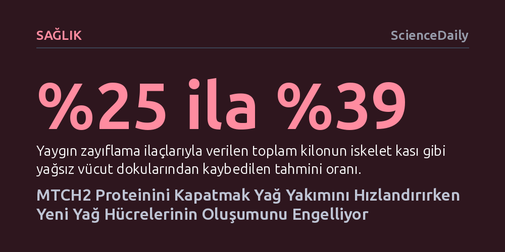

SAGLIK · ScienceDaily · 2026-10-25
Hücrelerde MTCH2 proteininin devre dışı bırakılması, kas kütlesine zarar vermeden yağ yakımını hızlandırıyor ve yeni yağ hücrelerinin gelişimini durduruyor. Bu keşif, iştahı kesmek yerine hücrenin enerji harcama biçimini değiştiren yeni nesil obezite tedavilerinin kapısını aralıyor.
Kilo vermenin tek yolunun iştah baskılamak olduğu algısını yıkarak, kas kütlesi korunurken hücrelerin enerji tüketimini doğrudan artırmanın biyolojik olarak mümkün olduğunu gösteriyor.

Semaglutid ve tirzepatid gibi yeni nesil zayıflama ilaçları, beyindeki iştah sinyallerini baskılayarak kilo yönetiminde devrim yarattı. Ancak bu ilaçlarla verilen kilonun yaklaşık dörtte birinden fazlasının yağsız dokudan, yani doğrudan iskelet kasından gitmesi tıp dünyasında ciddi bir kaygı kaynağı haline geldi. Kas kaybı metabolizmayı yavaşlatıyor, fiziksel gücü azaltıyor ve ilacı bıraktıktan sonra kiloların hızla geri alınmasına zemin hazırlıyor.
Mevcut yaklaşımların tümü vücuda giren kaloriyi kısmaya odaklanırken, araştırmacılar farklı bir sorunun peşine düşmüş durumda: Vücuda giren enerjiyi kısmak yerine, hücrelerin enerjiyi harcama biçimini değiştirerek kas dokusuna dokunmadan sadece yağları eritmek mümkün olabilir mi? Weizmann Bilim Enstitüsü'nden bilim insanlarının ulaştığı son bulgular, bu sorunun yanıtının mitokondri zarında gizlenen bir moleküler şalterde yatabileceğini gösteriyor.
Weizmann Bilim Enstitüsü'nden Profesör Atan Gross ve doktora öğrencisi Sabita Chourasia liderliğindeki ekip, kısaca "Mitch" olarak adlandırılan MTCH2 proteinini mercek altına aldı. Hücrenin enerji santralleri olan mitokondriler, ihtiyaca göre birbirleriyle birleşerek büyük ağlar kuruyor veya parçalanarak ayrılıyor. Mitch proteini tam da bu birleşme (füzyon) sürecini yöneten kilit bir aktör olarak görev yapıyor.
Araştırmacılar laboratuvar ortamında genetik müdahaleyle insan hücrelerindeki MTCH2 proteinini devre dışı bıraktıklarında, mitokondri ağının parçalandığını ve hücrenin metabolik dengesinin kökten değiştiğini saptadı. Şalter kapandığında hücreler enerji tasarrufu yapmayı bırakıp adeta sürekli yakıt tüketen savurgan bir çalışma moduna geçti. Hücre içi solunum hızlandı; hücreler başta yağ asitleri olmak üzere glikoz ve amino asitleri çok daha yüksek oranlarda yakmaya başladı.
Üstelik hücreler artan enerji talebini karşılamak için kendi zarlarındaki lipidleri bile parçalayıp yakıt olarak kullandı. Gross'un ifadesiyle "Mitch insan hücrelerinde yağın kaderini belirliyor"; yani hücrenin elindeki yağı depolayacağına mı yoksa yakacağına mı bu protein karar veriyor.
MTCH2'nin kapatılması sadece mevcut yağların yakılmasını hızlandırmakla kalmıyor, aynı zamanda vücutta yeni yağ hücrelerinin oluşumunu da neredeyse tamamen durduruyor. Normal koşullarda henüz olgunlaşmamış öncül hücreler, adipogenez adı verilen bir süreçle olgunlaşarak yağ depolayan hücrelere dönüşür. Obez bireylerin yağ dokularında MTCH2 seviyesinin belirgin biçimde yüksek olması, bu proteinin yağ hücresi üretiminde kritik bir role sahip olduğunu gösteriyordu.
Yapılan laboratuvar deneylerinde normal öncül hücrelerin yaklaşık yüzde 80 ila 90'ı altı gün içinde olgun yağ hücresine dönüşürken, Mitch proteini silinen hücrelerde bu oran yalnızca yüzde 5 ila 10 düzeyinde kaldı. Bu sert düşüşün nedeni, hücrenin aşırı yakıt tüketimi yüzünden derin bir enerji açığı yaşamasıydı. Yeni bir yağ hücresi inşa etmek muazzam miktarda hücresel yapı taşı ve enerji gerektiriyor; oysa Mitch'ten yoksun hücreler ellerindeki tüm kaynakları yakıt olarak harcadığı için yağ depolayacak yapıları kurmaya fırsat bulamıyor.
Hücresel düzeydeki bu bulgular, uluslararası bir araştırmayla canlı organizmalarda da test edildi. Araştırmacılar farelerin sadece yağ dokusundaki MTCH2 proteinini ortadan kaldırdıklarında, hayvanların fiziksel aktivite düzeyleri ya da yedikleri yem miktarı değişmediği halde belirgin şekilde daha fazla kalori yaktıklarını belirledi.
Standart beslenmede normal farelerle benzer kilo artışı gösteren bu fareler, yüksek yağlı bir diyetle beslendiklerinde dikkat çekici bir direnç sergiledi: Kontrol grubuyla aynı miktarda kalori tüketmelerine rağmen çok daha az kilo aldılar ve vücutlarında çok daha az yağ birikti. En çarpıcı gelişme ise mevcut zayıflama ilaçlarının aksine, bu hayvanların yağsız kas kütlesinin tamamen korunmuş olmasıydı. Ayrıca farelerin glikoz toleransı yükseldi ve kan kolesterol seviyeleri geriledi.
Bu etkinin ardındaki moleküler detay da aydınlatıldı: MTCH2'nin, yağ asitlerinin mitokondriye girişini denetleyen CPT1 adlı enzimle doğrudan etkileşime girdiği ve bu kapıdaki fren mekanizmasını gevşeterek yağların mitokondride yakılmasını kolaylaştırdığı anlaşıldı. Üstelik bu süreç kahverengi yağ dokusunun bilinen ısı üretim mekanizmasından tamamen bağımsız biçimde gerçekleşiyor.
Tüm bu umut verici sonuçlara rağmen, MTCH2 hedefli bir ilacın insanlarda güvenli ve kalıcı bir kilo kaybı sağlayıp sağlayamayacağı henüz kesinleşmiş değil. İnsan hücrelerindeki analizler umut verici olsa da yağ dokusundaki farklılaşma ve tüm vücut metabolizmasına dair veriler ağırlıklı olarak fare deneylerine dayanıyor. İnsan metabolizmasının karmaşıklığı, farelerde elde edilen her başarının doğrudan kliniğe aktarılamayacağını daha önce pek çok kez gösterdi.
Ayrıca MTCH2 proteini yalnızca yağ dokusunda değil; hücre canlılığı, programlanmış hücre ölümü ve vücut genelindeki mitokondri sağlığı gibi temel biyolojik süreçlerde de görev alıyor. Bu proteini tüm vücutta rastgele baskılamak karaciğer, kalp veya kas gibi kritik organlarda öngörülemeyen toksik etkilere yol açabilir. Sağlıklı yağ dokusunun hormon üretimi ve fazla enerjiyi güvenle hapsetme işlevi hayati önem taşıdığından, yeni yağ hücresi üretimini tamamen kesmek serbest yağların hayati organların çevresinde birikmesi riskini doğurabilir. Dolayısıyla gelecekteki klinik adımların yalnızca yağ dokusunu hedef alan hassas iletim teknolojilerine odaklanması gerekecek.